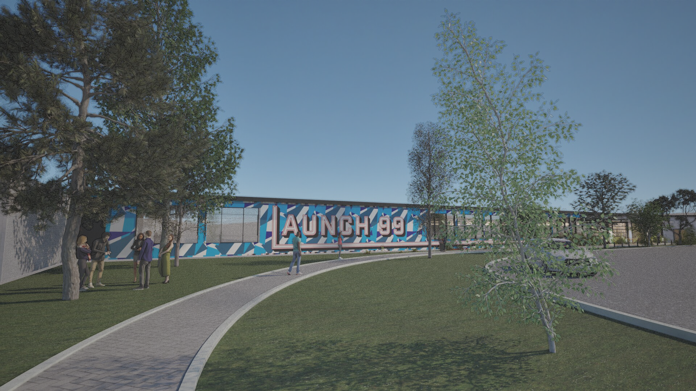
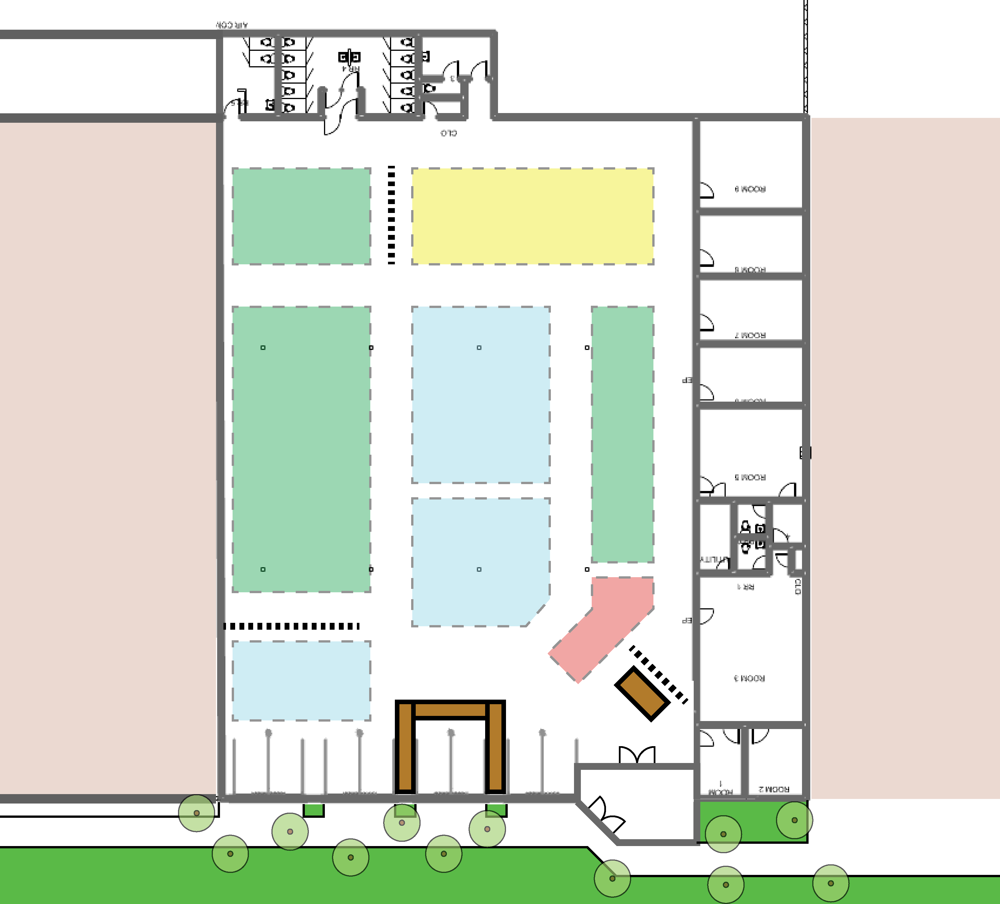
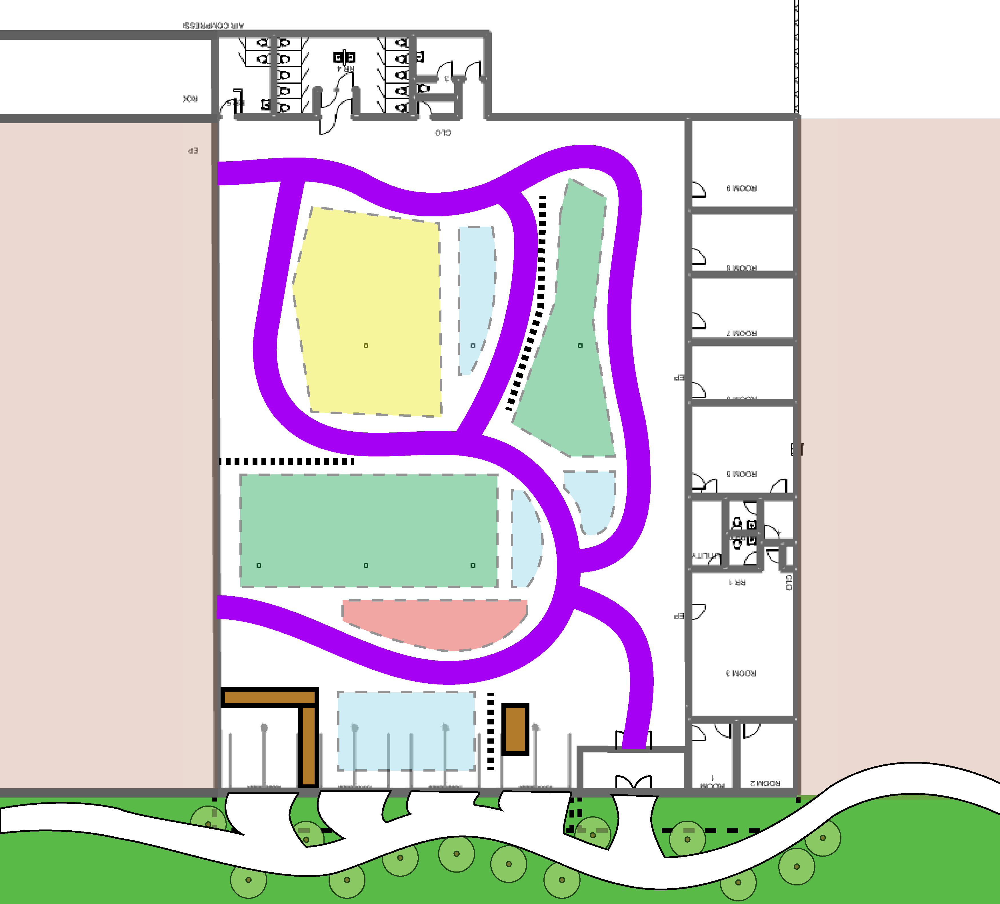
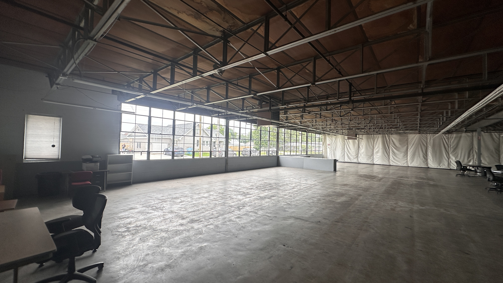
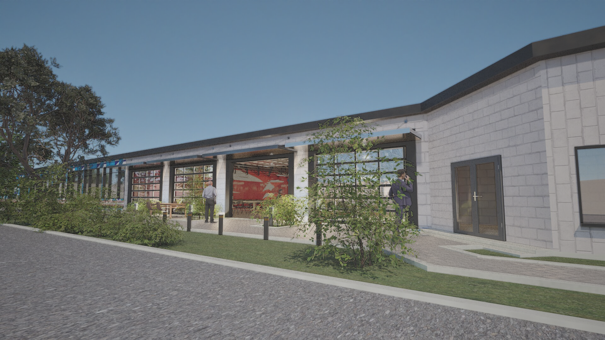
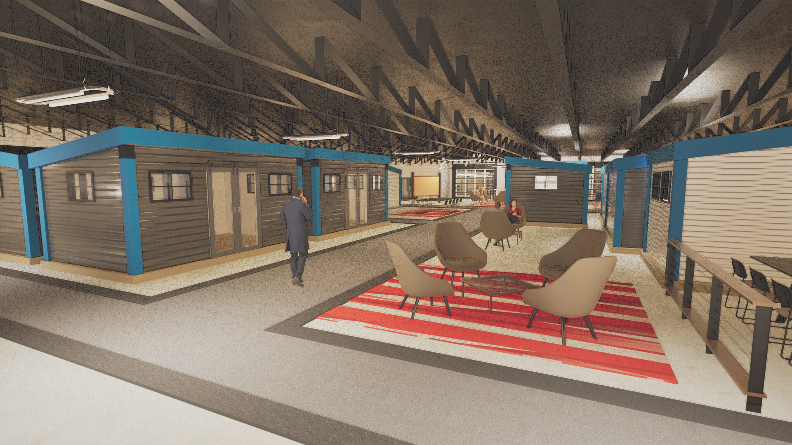
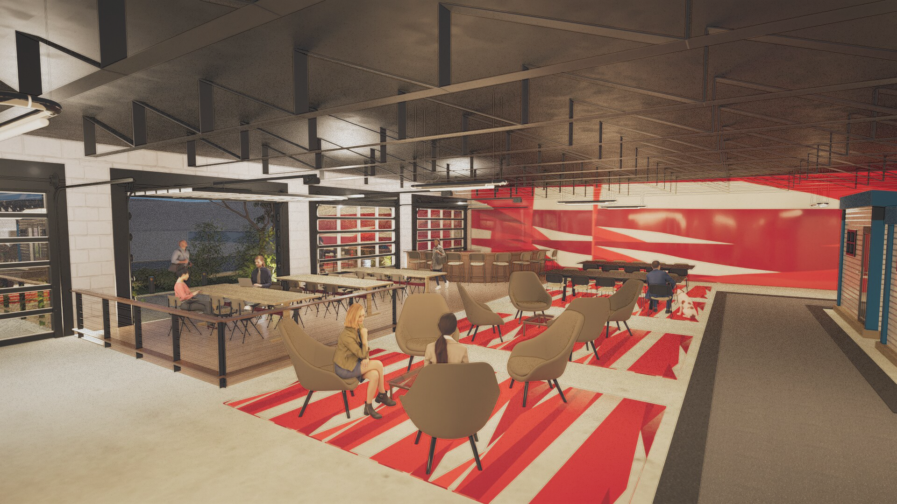

Architecture
Adaptive Reuse · Loogootee, IN
Launch 99

Role
Design · ModelingScope
Adaptive Reuse · Innovation HubTools
Rhino 8 · TwinmotionIn Loogootee, an abandoned factory became an opportunity to create a coworking and innovation hub that supports local manufacturing and reflects the town’s identity.
The design keeps the existing factory shell and adds a series of freestanding blue framed studio pods that create the feeling of a small village inside the building.
01Problem
Loogootee lacked modern spaces for entrepreneurs, remote workers, small businesses. At the same time, this large factory sat mostly empty despite having a large space to become a new place for the community.
02Solution
The existing factory structure stays in place, with blue framed studio pods added throughout the floor plan for private workspaces and small businesses. A café and shared tables sit near the front behind roll up garage doors that can open on nice days. The layout keeps room for future growth while creating a more active space from the start.
03Research




Process
Breaking up this large of a space into a digestible format was the goal. The client and I decided to mix both versions and create a "city" inside the space, like version 2, but with the layout like version 1.
04Product


